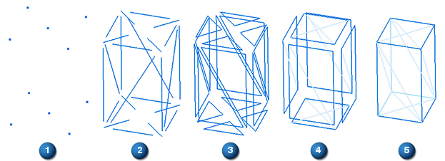
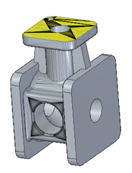
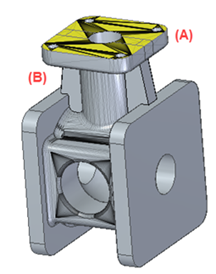

Mesh modeling support
Convergent Modeling enables mesh model bodies to be incorporated into design engineering workflows along with solid body models. Mesh modeling is increasingly the format of choice for additive manufacturing, reverse engineering, generative design, finite element analysis, and virtual reality environments.
Mesh model sources include high-resolution scanning, converted point cloud data, photometric data sets, and other sources for quickly evolving technologies in virtual 3D space.
Types of supported model bodies
Solid Edge supports the following types of model bodies:
- Solid body
-
The geometry in solid body modeling is fully described in 3D space using parametric Boolean operations to construct a feature-based model. This feature-based model is frequently referred to as a boundary representation (B-Rep) model.
The term feature-based is used to describe the various components of a model. A feature is the basic unit of a parametric solid model. For example, a part consists of 3D solid primitives (such as cylinders, cones, prisms, rectangles, or spheres) and various types of features (such as holes, grooves, fillets, and chamfers).
Solid body models use Boolean operations to construct and fully define a model that is then manipulated using Boolean operations. The term parametric is a term used to describe the ability to change the shape of model geometry as soon as the dimension value is modified.
- Mesh body
-
A polygon mesh body is a collection of (1) vertices, (2) edges, and (3) faces that define the shape of a (4) polyhedral object in 3D space, where one or more coplanar faces form a (5) surface. In Solid Edge, the faces consist of triangular facets. As a result, this type of body is often referred to as a facet body. The polygon meshes explicitly represent the surface of a body while the volume is implicit.

- Mixed mesh body
-
A mixed mesh body contains a combination of both classic (B-rep) and facet geometry. Mixed bodies are integral to hybrid convergent modeling workflows. For example, mixed bodies are output by generative design and may require modification and finishing, and they are imported as mesh, scanned, or facet geometry from other applications that create mixed body models.

-
Mixed bodies are shown as mesh bodies in PathFinder.
-
Basic ordered commands like Extrude, Revolve, and Cut are supported to create mixed bodies.
In ordered mode and in an assembly, you can use commands like Unite, Intersect, Split, and Hole to modify mixed bodies.
Note:The Round and Chamfer commands support mixed mesh modeling, but they create a mesh face.
You can use plastic part modeling commands such as Thin Wall, Thin Region, Web Network, Mounting Boss, and Vent to remove and add material from mixed mesh bodies.
-
Solid Edge supports patterning in the mixed mesh bodies. In the following example, a hole was patterned (A) and a rib was mirrored (B).

The rib and hole were created on mesh bodies, but the faces created by the pattern and mirror are B-Rep.
-
Commonly used commands, such as Physical Properties, Measure, and Geometry Inspector, as well as commands in the Dimension group, the Annotation group, and the Analyze group, are either partially or fully supported.
-